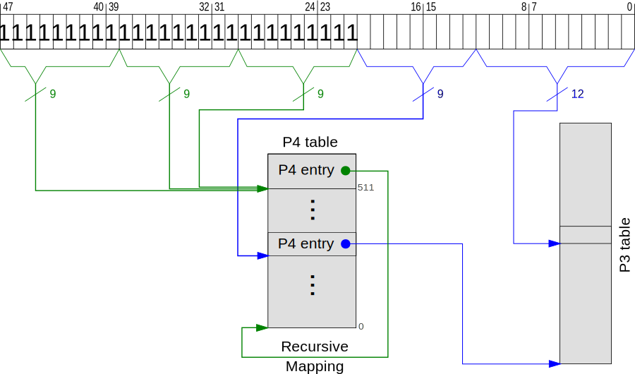

No longer updated! You are viewing the a post of the first edition of “Writing an OS in Rust”, which is no longer updated. You can find the second edition here.
In this post we will create a paging module, which allows us to access and modify the 4-level page table. We will explore recursive page table mapping and use some Rust features to make it safe. Finally we will create functions to translate virtual addresses and to map and unmap pages.
You can find the source code and this post itself on GitHub. Please file an issue there if you have any problems or improvement suggestions. There is also a comment section at the end of this page. Note that this post requires a current Rust nightly.
Paging is a memory management scheme that separates virtual and physical memory. The address space is split into equal sized pages and page tables specify which virtual page points to which physical frame. For an extensive paging introduction take a look at the paging chapter (PDF) of the Three Easy Pieces OS book.
The x86 architecture uses a 4-level page table in 64-bit mode. A virtual address has the following structure:
The bits 48–63 are so-called sign extension bits and must be copies of bit 47. The following 36 bits define the page table indexes (9 bits per table) and the last 12 bits specify the offset in the 4KiB page.
Each table has 2^9 = 512 entries and each entry is 8 byte. Thus a page table fits exactly in one page (4 KiB).
To translate an address, the CPU reads the P4 address from the CR3 register. Then it uses the indexes to walk the tables:
The P4 entry points to a P3 table, where the next 9 bits of the address are used to select an entry. The P3 entry then points to a P2 table and the P2 entry points to a P1 table. The P1 entry, which is specified through bits 12–20, finally points to the physical frame.
Let’s create a basic paging module in memory/paging/mod.rs:
use memory::PAGE_SIZE; // needed later
const ENTRY_COUNT: usize = 512;
pub type PhysicalAddress = usize;
pub type VirtualAddress = usize;
pub struct Page {
number: usize,
}
We import the PAGE_SIZE and define a constant for the number of entries per table. To make future function signatures more expressive, we can use the type aliases PhysicalAddress and VirtualAddress. The Page struct is similar to the Frame struct in the previous post, but represents a virtual page instead of a physical frame.
We define that an unused entry is completely 0. That allows us to distinguish unused entries from other non-present entries in the future. For example, we could define one of the available bits as the swapped_out bit for pages that are swapped to disk.
Next we will model the contained physical address and the various flags. Remember, entries have the following format:
Bit(s)
Name
Meaning
0
present
the page is currently in memory
1
writable
it’s allowed to write to this page
2
user accessible
if not set, only kernel mode code can access this page
3
write through caching
writes go directly to memory
4
disable cache
no cache is used for this page
5
accessed
the CPU sets this bit when this page is used
6
dirty
the CPU sets this bit when a write to this page occurs
7
huge page/null
must be 0 in P1 and P4, creates a 1GiB page in P3, creates a 2MiB page in P2
8
global
page isn’t flushed from caches on address space switch (PGE bit of CR4 register must be set)
9-11
available
can be used freely by the OS
12-51
physical address
the page aligned 52bit physical address of the frame or the next page table
52-62
available
can be used freely by the OS
63
no execute
forbid executing code on this page (the NXE bit in the EFER register must be set)
To model the various flags, we will use the bitflags crate. To add it as a dependency, add the following to your Cargo.toml:
[dependencies]
...
bitflags = "0.9.1"
To import the macro, we need to use #[macro_use] above the extern crate definition:
// in src/lib.rs
#[macro_use]
extern crate bitflags;
This allows us to check for flags through the contains() function. For example, flags().contains(PRESENT | WRITABLE) returns true if the entry contains both flags.
To extract the physical address, we add a pointed_frame method:
If the entry is present, we mask bits 12–51 and return the corresponding frame. If the entry is not present, it does not point to a valid frame so we return None.
To modify entries, we add a set method that updates the flags and the pointed frame:
The start address of a frame should be page aligned and smaller than 2^52 (since x86 uses 52bit physical addresses). Since an invalid address could mess up the entry, we add an assertion. To actually set the entry, we just need to or the start address and the flag bits.
The missing Frame::start_address method is pretty simple:
To model page tables, we create a basic Table struct in a new table submodule:
use memory::paging::entry::*;
use memory::paging::ENTRY_COUNT;
pub struct Table {
entries: [Entry; ENTRY_COUNT],
}
It’s just an array of 512 page table entries.
To make the Table indexable itself, we can implement the Index and IndexMut traits:
use core::ops::{Index, IndexMut};
impl Index<usize> for Table {
type Output = Entry;
fn index(&self, index: usize) -> &Entry {
&self.entries[index]
}
}
impl IndexMut<usize> for Table {
fn index_mut(&mut self, index: usize) -> &mut Entry {
&mut self.entries[index]
}
}
Now it’s possible to get the 42th entry through some_table[42]. Of course we could replace usize with u32 or even u16 here but it would cause more numerical conversions (x as u16).
Let’s add a method that sets all entries to unused. We will need it when we create new page tables in the future. The method looks like this:
pub fn zero(&mut self) {
for entry in self.entries.iter_mut() {
entry.set_unused();
}
}
Now we can read page tables and retrieve the mapping information. We can also update them through the IndexMut trait and the Entry::set method. But how do we get references to the various page tables?
We could read the CR3 register to get the physical address of the P4 table and read its entries to get the P3 addresses. The P3 entries then point to the P2 tables and so on. But this method only works for identity-mapped pages. In the future we will create new page tables, which aren’t in the identity-mapped area anymore. Since we can’t access them through their physical address, we need a way to map them to virtual addresses.
So how do we map the page tables itself? We don’t have that problem for the current P4, P3, and P2 table since they are part of the identity-mapped area, but we need a way to access future tables, too.
One solution is to identity map all page tables. That way we would not need to differentiate virtual and physical addresses and could easily access the tables. But it clutters the virtual address space and increases fragmentation. And it makes creating page tables much more complicated since we need a physical frame whose corresponding page isn’t already used for something else.
An alternative solution is to map the page tables only temporary. To read/write a page table, we would map it to some free virtual address until we’re done. We could use a small pool of such virtual addresses and reuse them for various tables. This method occupies only few virtual addresses and thus is a good solution for 32-bit systems, which have small address spaces. But it makes things much more complicated since we need to temporary map up to 4 tables to access a single page. And the temporary mapping requires modification of other page tables, which need to be mapped, too.
We will solve the problem in another way using a trick called recursive mapping.
The trick is to map the P4 table recursively: The last entry doesn’t point to a P3 table, but to the P4 table itself. We can use this entry to remove a translation level so that we land on a page table instead. For example, we can “loop” once to access a P1 table:
By selecting the 511th P4 entry, which points points to the P4 table itself, the P4 table is used as the P3 table. Similarly, the P3 table is used as a P2 table and the P2 table is treated like a P1 table. Thus the P1 table becomes the target page and can be accessed through the offset.
It’s also possible to access P2 tables by looping twice. And if we select the 511th entry three times, we can access and modify P3 tables:

So we just need to specify the desired P3 table in the address through the P1 index. By choosing the 511th entry multiple times, we stay on the P4 table until the address’s P1 index becomes the actual P4 index.
To access the P4 table itself, we loop once more and thus never leave the frame:
So we can access and modify page tables of all levels by just setting one P4 entry once. Most work is done by the CPU, we just the recursive entry to remove one or more translation levels. It may seem a bit strange at first, but it’s a clean and simple solution once you wrapped your head around it.
By using recursive mapping, each page table is accessible through an unique virtual address. The math checks out, too: If all page tables are used, there is 1 P4 table, 511 P3 tables (the last entry is used for the recursive mapping), 511*512 P2 tables, and 511*512*512 P1 tables. So there are 134217728 page tables altogether. Each page table occupies 4KiB, so we need 134217728 * 4KiB = 512GiB to store them. That’s exactly the amount of memory that can be accessed through one P4 entry since 4KiB per page * 512 P1 entries * 512 P2 entries * 512 P3 entries = 512GiB.
Of course recursive mapping has some disadvantages, too. It occupies a P4 entry and thus 512GiB of the virtual address space. But since we’re in long mode and have a 48-bit address space, there are still 225.5TiB left. The bigger problem is that only the active table can be modified by default. To access another table, the recursive entry needs to be replaced temporary. We will tackle this problem in the next post when we switch to a new page table.
To map the P4 table recursively, we just need to point the 511th entry to the table itself. Of course we could do it in Rust, but it would require some fiddling with unsafe pointers. It’s easier to just add some lines to our boot assembly:
I put it right after the set_up_page_tables label, but you can add it wherever you like.
Now we can use special virtual addresses to access the page tables. The P4 table is available at 0xfffffffffffff000. Let’s add a P4 constant to the table submodule:
pub const P4: *mut Table = 0xffffffff_fffff000 as *mut _;
Let’s switch to the octal system, since it makes more sense for the other special addresses. The P4 address from above is equivalent to 0o177777_777_777_777_777_0000 in octal. You can see that is has index 777 in all tables and offset 0000. The 177777 bits on the left are the sign extension bits, which are copies of the 47th bit. They are required because x86 only uses 48bit virtual addresses.
The other tables can be accessed through the following addresses:
Table
Address
Indexes
P4
0o177777_777_777_777_777_0000
–
P3
0o177777_777_777_777_XXX_0000
XXX is the P4 index
P2
0o177777_777_777_XXX_YYY_0000
like above, and YYY is the P3 index
P1
0o177777_777_XXX_YYY_ZZZ_0000
like above, and ZZZ is the P2 index
If we look closely, we can see that the P3 address is equal to (P4 << 9) | XXX_0000. And the P2 address is calculated through (P3 << 9) | YYY_0000. So to get the next address, we need to shift it 9 bits to the left and add the table index. As a formula:
fn next_table_address(&self, index: usize) -> Option<usize> {
let entry_flags = self[index].flags();
if entry_flags.contains(PRESENT) && !entry_flags.contains(HUGE_PAGE) {
let table_address = self as *const _ as usize;
Some((table_address << 9) | (index << 12))
} else {
None
}
}
The next table address is only valid if the corresponding entry is present and does not create a huge page. Then we can do some pointer casting to get the table address and use the formula to calculate the next address.
If the index is out of bounds, the function will panic since Rust checks array bounds. The panic is desired here since a wrong index should not be possible and indicates a bug.
To convert the address into references, we add two functions:
We convert the address into raw pointers through as casts and then convert them into Rust references through &mut *. The latter is an unsafe operation since Rust can’t guarantee that the raw pointer is valid.
Note that self stays borrowed as long as the returned reference is valid. This is because of Rust’s lifetime elision rules. Basically, these rules say that the lifetime of an output reference is the same as the lifetime of the input reference by default. So the above function signatures are expanded to:
Note the additional lifetime parameters, which are identical for input and output references. That’s exactly what we want. It ensures that we can’t modify tables as long as we have references to lower tables. For example, it would be very bad if we could unmap a P3 table if we still write to one of its P2 tables.
Now we can start at the P4 constant and use the next_table functions to access the lower tables. And we don’t even need unsafe blocks to do it! Right now, your alarm bells should be ringing. Thanks to Rust, everything we’ve done before in this post was completely safe. But we just introduced two unsafe blocks to convince Rust that there are valid tables at the specified addresses. Can we really be sure?
First, these addresses are only valid if the P4 table is mapped recursively. Since the paging module will be the only module that modifies page tables, we can introduce an invariant for the module:
The 511th entry of the active P4 table must always be mapped to the active P4 table itself.
So if we switch to another P4 table at some time, it needs to be identity mapped before it becomes active. As long as we obey this invariant, we can safely use the special addresses. But even with this invariant, there is a big problem with the two methods:
What happens if we call them on a P1 table?
Well, they would calculate the address of the next table (which does not exist) and treat it as a page table. Either they construct an invalid address (if XXX < 400)1 or access the mapped page itself. That way, we could easily corrupt memory or cause CPU exceptions by accident. So these two functions are not safe in Rust terms. Thus we need to make them unsafe functions unless we find some clever solution.
We can use Rust’s type system to statically guarantee that the next_table methods can only be called on P4, P3, and P2 tables, but not on a P1 table. The idea is to add a Level parameter to the Table type and implement the next_table methods only for level 4, 3, and 2.
To model the levels we use a trait and empty enums:
pub trait TableLevel {}
pub enum Level4 {}
pub enum Level3 {}
pub enum Level2 {}
pub enum Level1 {}
impl TableLevel for Level4 {}
impl TableLevel for Level3 {}
impl TableLevel for Level2 {}
impl TableLevel for Level1 {}
An empty enum has size zero and disappears completely after compiling. Unlike an empty struct, it’s not possible to instantiate an empty enum. Since we will use TableLevel and the table levels in exported types, they need to be public.
To differentiate the P1 table from the other tables, we introduce a HierarchicalLevel trait, which is a subtrait of TableLevel. But we implement it only for the levels 4, 3, and 2:
pub trait HierarchicalLevel: TableLevel {}
impl HierarchicalLevel for Level4 {}
impl HierarchicalLevel for Level3 {}
impl HierarchicalLevel for Level2 {}
Now the next_table methods are only available for P4, P3, and P2 tables. But they have the incomplete return type Table<???> now. What should we fill in for the ????
For a P4 table we would like to return a Table<Level3>, for a P3 table a Table<Level2>, and for a P2 table a Table<Level1>. So we want to return a table of the next level.
We can define the next level by adding an associated type to the HierarchicalLevel trait:
trait HierarchicalLevel: TableLevel {
type NextLevel: TableLevel;
}
impl HierarchicalLevel for Level4 {
type NextLevel = Level3;
}
impl HierarchicalLevel for Level3 {
type NextLevel = Level2;
}
impl HierarchicalLevel for Level2 {
type NextLevel = Level1;
}
Now we can replace the Table<???> types with Table<L::NextLevel> types and our code works as intended. You can try it with a simple test function:
Most of the indexes are completely out of bounds, so it would panic if it’s called. But we don’t need to call it since it already fails at compile time:
error: no method named `next_table` found for type
`&memory::paging::table::Table<memory::paging::table::Level1>`
in the current scope
Remember that this is bare metal kernel code. We just used type system magic to make low-level page table manipulations safer. Rust is just awesome!
Now let’s do something useful with our new module. We will create a function that translates a virtual address to the corresponding physical address. We add it to the paging/mod.rs module:
The assertion is needed because there can be invalid addresses. Addresses on x86 are just 48-bit long and the other bits are just sign extension, i.e. a copy of the most significant bit. For example:
invalid address: 0x0000_8000_0000_0000
valid address: 0xffff_8000_0000_0000
└── bit 47
So the address space is split into two halves: the higher half containing addresses with sign extension and the lower half containing addresses without. Everything in between is invalid.
Since we added containing_address, we add the inverse method as well (maybe we need it later):
The other missing function, translate_page, looks like this:
use memory::Frame;
fn translate_page(page: Page) -> Option<Frame> {
use self::entry::HUGE_PAGE;
let p3 = unsafe { &*table::P4 }.next_table(page.p4_index());
let huge_page = || {
// TODO
};
p3.and_then(|p3| p3.next_table(page.p3_index()))
.and_then(|p2| p2.next_table(page.p2_index()))
.and_then(|p1| p1[page.p1_index()].pointed_frame())
.or_else(huge_page)
}
We use an unsafe block to convert the raw P4 pointer to a reference. Then we use the Option::and_then function to go through the four table levels. If some entry along the way is None, we check if the page is a huge page through the (unimplemented) huge_page closure.
The Page::p*_index functions return the different table indexes. They look like this:
We use an unsafe block to convert the raw P4 pointer into a shared reference. It’s safe because we don’t create any &mut references to the table right now and don’t switch the P4 table either. But as soon as we do something like that, we have to revisit this method.
The huge_page closure calculates the corresponding frame if huge pages are used. Its content looks like this:
p3.and_then(|p3| {
let p3_entry = &p3[page.p3_index()];
// 1GiB page?
if let Some(start_frame) = p3_entry.pointed_frame() {
if p3_entry.flags().contains(HUGE_PAGE) {
// address must be 1GiB aligned
assert!(start_frame.number % (ENTRY_COUNT * ENTRY_COUNT) == 0);
return Some(Frame {
number: start_frame.number + page.p2_index() *
ENTRY_COUNT + page.p1_index(),
});
}
}
if let Some(p2) = p3.next_table(page.p3_index()) {
let p2_entry = &p2[page.p2_index()];
// 2MiB page?
if let Some(start_frame) = p2_entry.pointed_frame() {
if p2_entry.flags().contains(HUGE_PAGE) {
// address must be 2MiB aligned
assert!(start_frame.number % ENTRY_COUNT == 0);
return Some(Frame {
number: start_frame.number + page.p1_index()
});
}
}
}
None
})
This function is much longer and more complex than the translate_page function itself. To avoid this complexity in the future, we will only work with standard 4KiB pages from now on.
Let’s add a function that modifies the page tables to map a Page to a Frame:
pub use self::entry::*;
use memory::FrameAllocator;
pub fn map_to<A>(page: Page, frame: Frame, flags: EntryFlags,
allocator: &mut A)
where A: FrameAllocator
{
let p4 = unsafe { &mut *P4 };
let mut p3 = p4.next_table_create(page.p4_index(), allocator);
let mut p2 = p3.next_table_create(page.p3_index(), allocator);
let mut p1 = p2.next_table_create(page.p2_index(), allocator);
assert!(p1[page.p1_index()].is_unused());
p1[page.p1_index()].set(frame, flags | PRESENT);
}
We add an re-export for all entry types since they are required to call the function. We assert that the page is unmapped and always set the present flag (since it wouldn’t make sense to map a page without setting it).
The Table::next_table_create method doesn’t exist yet. It should return the next table if it exists, or create a new one. For the implementation we need the FrameAllocator from the previous post and the Table::zero method:
use memory::FrameAllocator;
pub fn next_table_create<A>(&mut self,
index: usize,
allocator: &mut A)
-> &mut Table<L::NextLevel>
where A: FrameAllocator
{
if self.next_table(index).is_none() {
assert!(!self.entries[index].flags().contains(HUGE_PAGE),
"mapping code does not support huge pages");
let frame = allocator.allocate_frame().expect("no frames available");
self.entries[index].set(frame, PRESENT | WRITABLE);
self.next_table_mut(index).unwrap().zero();
}
self.next_table_mut(index).unwrap()
}
We can use unwrap() here since the next table definitely exists.
We used an unsafe block in map_to to convert the raw P4 pointer to a &mut reference. That’s bad. It’s now possible that the &mut reference is not exclusive, which breaks Rust’s guarantees. It’s only a matter time before we run into a data race. For example, imagine that one thread maps an entry to frame_A and another thread (on the same core) tries to map the same entry to frame_B.
The problem is that there’s no clear owner for the page tables. So let’s define page table ownership!
We already obey this rule: To get a reference to a table, we need to borrow it from its parent table through the next_table method. But who owns the P4 table?
The recursively mapped P4 table is owned by a ActivePageTable struct.
We just defined some random owner for the P4 table. But it will solve our problems. And it will also provide the interface to other modules.
So let’s create the struct:
use self::table::{Table, Level4};
use core::ptr::Unique;
pub struct ActivePageTable {
p4: Unique<Table<Level4>>,
}
We can’t store the Table<Level4> directly because it needs to be at a special memory location (like the VGA text buffer). We could use a raw pointer or &mut instead of Unique, but Unique indicates ownership better.
Because the ActivePageTable owns the unique recursive mapped P4 table, there must be only one ActivePageTable instance. Thus we make the constructor function unsafe:
Since we will only create valid P4 pointers, the unsafe blocks are safe. However, we don’t make these functions public since they can be used to make page tables invalid. Only the higher level functions (such as translate or map_to) should be usable from other modules.
Now we can make the map_to and translate functions safe by making them methods of ActivePageTable:
To unmap a page, we set the corresponding P1 entry to unused:
fn unmap<A>(&mut self, page: Page, allocator: &mut A)
where A: FrameAllocator
{
assert!(self.translate(page.start_address()).is_some());
let p1 = self.p4_mut()
.next_table_mut(page.p4_index())
.and_then(|p3| p3.next_table_mut(page.p3_index()))
.and_then(|p2| p2.next_table_mut(page.p2_index()))
.expect("mapping code does not support huge pages");
let frame = p1[page.p1_index()].pointed_frame().unwrap();
p1[page.p1_index()].set_unused();
// TODO free p(1,2,3) table if empty
allocator.deallocate_frame(frame);
}
The assertion ensures that the page is mapped. Thus the corresponding P1 table and frame must exist for a standard 4KiB page. We set the entry to unused and free the associated frame in the supplied frame allocator.
We can also free the P1, P2, or even P3 table when the last entry is freed. But checking the whole table on every unmap would be very expensive. So we leave the TODO in place until we find a good solution. I’m open for suggestions :).
Spoiler: There is an ugly bug in this function, which we will find in the next section.
To test it, we add a test_paging function in memory/paging/mod.rs:
pub fn test_paging<A>(allocator: &mut A)
where A: FrameAllocator
{
let mut page_table = unsafe { ActivePageTable::new() };
// test it
}
We borrow the frame allocator since we will need it for the mapping functions. To be able to call that function from main, we need to re-export it in memory/mod.rs:
// in memory/mod.rs
pub use self::paging::test_paging;
// lib.rs
let mut frame_allocator = ...;
memory::test_paging(&mut frame_allocator);
let addr = 42 * 512 * 512 * 4096; // 42th P3 entry
let page = Page::containing_address(addr);
let frame = allocator.allocate_frame().expect("no more frames");
println!("None = {:?}, map to {:?}",
page_table.translate(addr),
frame);
page_table.map_to(page, frame, EntryFlags::empty(), allocator);
println!("Some = {:?}", page_table.translate(addr));
println!("next free frame: {:?}", allocator.allocate_frame());
We just map some random page to a free frame. To be able to borrow the page table as &mut, we need to make it mutable.
You should see output similar to this:
None = None, map to Frame { number: 0 }
Some = Some(0)
next free frame: Some(Frame { number: 3 })
It’s frame 0 because it’s the first frame returned by the frame allocator. Since we map the 42th P3 entry, the mapping code needs to create a P2 and a P1 table. So the next free frame returned by the allocator is frame 3.
It causes a panic since we call the unimplemented deallocate_frame method in unmap. If we comment this call out, it works without problems. But there is some bug in this function nevertheless.
Let’s read something from the mapped page (of course before we unmap it again):
println!("{:#x}", unsafe {
*(Page::containing_address(addr).start_address() as *const u64)
});
Since we don’t zero the mapped pages, the output is random. For me, it’s 0xf000ff53f000ff53.
If unmap worked correctly, reading it again after unmapping should cause a page fault. But it doesn’t. Instead, it just prints the same number again. When we remove the first read, we get the desired page fault (i.e. QEMU reboots again and again). So this seems to be some cache issue.
An x86 processor has many different caches because always accessing the main memory would be very slow. Most of these caches are completely transparent. That means everything works exactly the same as without them, it’s just much faster. But there is one cache, that needs to be updated manually: the translation lookaside buffer.
The translation lookaside buffer, or TLB, caches the translation of virtual to physical addresses. It’s filled automatically when a page is accessed. But it’s not updated transparently when the mapping of a page changes. This is the reason that we still can access the page even through we unmapped it in the page table.
So to fix our unmap function, we need to remove the cached translation from the TLB. We can use the x86_64 crate to do this easily. To add it, we append the following to our Cargo.toml:
[dependencies]
...
x86_64 = "0.1.2"
Now we can use it to fix unmap:
...
p1[page.p1_index()].set_unused();
use x86_64::instructions::tlb;
use x86_64::VirtualAddress;
tlb::flush(VirtualAddress(page.start_address()));
// TODO free p(1,2,3) table if empty
//allocator.deallocate_frame(frame);
}
Now the desired page fault occurs even when we access the page before.
In the next post we will extend this module and add a function to modify inactive page tables. Through that function, we will create a new page table hierarchy that maps the kernel correctly using 4KiB pages. Then we will switch to the new table to get a safer kernel environment.
Afterwards, we will use this paging module to build a heap allocator. This will allow us to use allocation and collection types such as Box and Vec.
If the XXX part of the address is smaller than 0o400, it’s binary representation doesn’t start with 1. But the sign extension bits, which should be a copy of that bit, are 1 instead of 0. Thus the address is not valid.
2
Image sources: Modified versions of an image from Wikipedia. The modified files are licensed under the Creative Commons Attribution-Share Alike 3.0 Unported license.
First of all thanks a lot for sharing this series of article. Just a question: do you have an idea why doubling the stack size would not be sufficient to avoid the silent stack overflow you mentioned? To make my code work I had to triple it...
Philipp Oppermann•
What are you doing in your main? Maybe there is something stack intensive before the `test_paging` call? My main function looks like this. I removed most of the example code from the previous posts, so maybe that's the reason..
Matteo Meli•
You're right! The main difference in my code is that I set up interrupts. It must be that. Thanks
Philipp Oppermann•
Nice! I assume that you have some experience with OS development?
Matteo Meli•
Not really much actually, but trying to work my way through. Currently stuck trying to load the kernel in the higher half... Do you have any references to point me to?
Philipp Oppermann•
Only the stuff from the OSDev wiki but I think that you are aware of it already.
I would link the Rust code to the higher half but keep all startup assembly identity mapped. Then map the Rust code from the long mode assembly and jump to it.
Maybe it's even possible to use the same linker script as before since rustc generates position independent code by default (AFAIK).
Kiley Owen•
Is there a typo in the code in the huge pages section?
Philipp Oppermann•
Maybe... What's the problem exactly?
FreeFull•
`TableEntryFlags` is mentioned exactly once. Where does it come from?
Philipp Oppermann•
It should be `EntryFlags`. Thanks for reporting, I pushed an update.
Ted Meyer•
In order to decide when a page table should be freed, you can use the 52nd bit in the first 9 entries, to keep a score of how many present entries there are. It might be pretty bad for caching though.
Philipp Oppermann•
I like the idea. Alternatively, we could use bits 52 to 61 of the first entry. What's your concern about caching?
Ted Meyer•
My main concern with using all the bits in the first entry is that if ever in the future you want to go back and add more things, it would need to be changed.
As far as caching goes, it would depend on how big a cache line is, but if it is smaller than 9 table entries then there could be multiple cache misses on a single update (theoretically 9 bits could be changed for one addition / deletion of a page). Obviously not a _huge_ deal, but I think it's worth pointing out.
Stephen Checkoway•
Neither choice seems like it works. Bits 62:MAXPHYADDR (where MAXPHYADDR is at most 52) are reserved and supposed to be set to 0. However, bits 11:9 appear to be free at every level of the page table hierarchy.
Somewhat annoyingly, 10 bits are needed since 513 values need to be represented. Thus one could use three bits from each of the first four entries.
x86-64 has a 64-byte cache line size so the four accesses do fit in a single cache line.
Ryan Campbell•
Hey Phillip, started doing this a couple days ago and was able to make it this far. Unfortunately I am now having some compilation issues that appear to be a result of the x86 crate. I get "error: 'raw::Slice' does not name a structure" when compiling raw-cpuid, a dependency for x86. Thoughts?
Yeah, the `raw::Slice` struct was deprecated and removed in the latest nightlies. However, the current version of the raw-cpuid crate still depends on it. The author is aware of the issue and will publish a new version in the next few days. Until then, you can try an older nightly as a workaround.
Ryan Campbell•
Yep, I got it working just editing those couple of lines. Will pull new update tomorrow. Thanks!
Cris•
Can you explain me this self referencing trick for Page tables ?
Philipp Oppermann•
Of course! I tried to do give a short overview in the Recursive Mapping section. Which part of it is unclear? Or do you have a specific question?
Cris•
I didn't understand how looping once you can access P1 entry.. Can you give a short example..
Philipp Oppermann•
The virtual->physical address calculation is done in hardware, which expects 4 levels of page tables. In order to access the entries of a P1 table, we need to remove one level of translation. The trick is that all page tables have the (almost) same format, independent of the table level. So the CPU doesn't see a difference between e.g. a P4 and a P3 table.
This allows us to implement the recursive mapping trick. We lead the CPU to believe that the P2 table is the P1 table and that the P3 table is the P2 table. Thus we end up on the memory page of the P1 table and are able to modify its entries.
Likewise, the CPU interprets the P4 table as P3 table. But which table do we use as P4 table then? Well, we use the same P4 table as before. So our P4 is used twice by the CPU: At the first time, it is interpreted as a P4 table and at the second time as a P3 table.
Now only one piece is missing: We need a special P4 entry, which points to the its own table again. This way we can construct a virtual address for which the P4 table is used twice (once as P4 and once as P3).
I hope it helps :).
Cris•
Got it.. thanks
Hoschi•
Hi everybody!
When I try to compile the code from this article, I get the following error:
error: private trait in public interface (error E0445)
It's fired here: impl<l> Table<l> where L: HierarchicalLevel {...}
This seems to be one of those errors, caused by the fact, Rust is still under development and some features change from time to time.
It compiles if I make the trait public: pub trait HierarchicalLevel: TableLevel {....}
I wrote the code on my own and to make sure this is not an error caused by myself, I cloned the github repo and tried to compile it with the same result.
Maybe one of the more skilled OS devs here has an idea if it is a problem to mark the trait as public.
Thanks in advance!
Christian
Philipp Oppermann•
Thanks a lot for reporting this! I thought that we've fixed this issue, but it seems like we've messed up somehow. I opened this issue for it.
That said, I think that a public HierarchicalLevel is the correct solution. It shouldn't be a problem since you can't do anything bad by implementing HierarchicalLevel (e.g. you still can't construct a `Table`).
Gil•
Hello,
You said that the P4 recursive loop must be set before paging is enabled. But I wonder - the memory is currently identity mapped, so what difference is there in P4_table address in with/without paging?
Philipp Oppermann•
Hmm, good point! The P4 table is part of the identity mapped area, so it should work even if we do it after enabling paging.
That sentence was added in #246, but I don't know the reason anymore. I just tested it and it still works if I do the recursive mapping after paging is enabled. So maybe we should revert that PR…
Gil•
Thanks for the clarification :)
Evan Higgins•
Hi Phil, First off, I just want to say thanks for this tutorial, it's really great. I've run into an issue on this section when implementing the memory::paging::test_paging function. Specifically, with the test for unmap. If everything up to and including the unmap function call is implemented it operates as expected and unmap panics, but if the corresponding println! is added the kernel goes into a boot loop. Based on what you have said in this section that seems to indicate a page fault, but I don't really understand why the existence of that println! causes it. It's more confusing because execution never actually reaches that macro, so it's just the inclusion of that line in the code that triggers it. To make things ever weirder, it quits boot-looping whenever I add a second (or third, etc.) instance of that println! call.
So my question is: Do you have any insight as to what could be the cause of this? Or, if nothing else, some avenues I could pursue for debugging?
Thanks
Matthew•
Hey Philipp, regarding the Testing and Bugfixing section, can you explain why only a P2 and a P1 table is created after running map_to? Why isn't a P3 table created?
Matthew•
I think I figured it out. Is it because we already mapped index 0 of P4 to a P3 table from boot.asm?
Philipp Oppermann•
Yes, exactly.
Warren•
I've implemented paging and everything seems to work correctly, but reading from an unmapped page causes a page fault even without flushing the translation lookaside buffer. I also tried it out with your repo and it exhibited the same behavior after I commented out the call to tlb::flush. Is there some QEMU setting that I need to change?
Philipp Oppermann•
If the address isn't cached in the TLB, it works without a flush. The cache has limited space, so some translations are evicted when space runs out. Maybe try accessing the to be unmapped page right before unmapping it?
sieken•
Hi!
First of all; This is an amazing project, thank you very much for your time and effort, and the work put down into doing this!
I am a complete beginner in Rust, and follow this guide mainly to get a better grasp on operating system "basics". Your tutorials have been very good at explaining the code snippets in a simple manner, but sometimes it gets a bit confusing as to where functions and other code snippets should be placed in the file tree.. If you find the time, could you write the path/filename of where each code snippet goes? I'm sure it would be very helpful to other people who, like me, are not yet intuitive about "what parts go where".
Hi Phil, when I try to add the test code to test the unmap with the lines of code below, looks like the system can't boot up, and qemu just keeps rebooting. But if I remove this line. the code works perfectly. Could you please help to have a check.
println!("{:#x}", unsafe {
*(Page::containing_address(addr).start_address() as *const u64)
});
Anonym•
The issue has been solved, keep rebooting is caused by the page fault, and the root cause is some index is misused. After correct the index, the issue is gone.
varp•
Hey Phil. This is a fairly basic question compared to some of the other comments here and I probably am missing something simple. When the Entry::pointed_frame function is made, it uses 0x000fffff_fffff000 to mask bits 12-51. Why that number? It doesn't only mask those bits. What am I missing?
Philipp Oppermann•
It clears the lowest and highest 12 bits. So bits 12 to 51 should be the only bits set afterwards.
varp•
I realize now I was messing up maths. I was thinking each digit in hex being 16 bits instead of 4 bits. Thanks
Jack Halford•
hi phil, quick question
It seems that as soon as I enable x86 paging the VGA buffer is not accessible anymore (because 0xb8000 is not identity mapped yet?). So essentially the test_paging routine doesnt print anything... so my thinking tells me the identity map is the first thing to do after enabling paging, yet its the subject of the next chapter, am I not getting something?
Jack Halford•
I didn't realise the boot.asm p2 p3 p4 setup was already a preliminary identity paging with huge pages, that's awesome!
I'm working on x86 protected mode so I only have p1,p2 and my huge pages are 4MiB.
Philipp Oppermann•
Yeah, paging is enabled since entering longmode (with an identity mapping). Do you have any reason for only choosing protected mode?

{kind=link}
There is some interesting discussion on /r/programming and /r/rust.